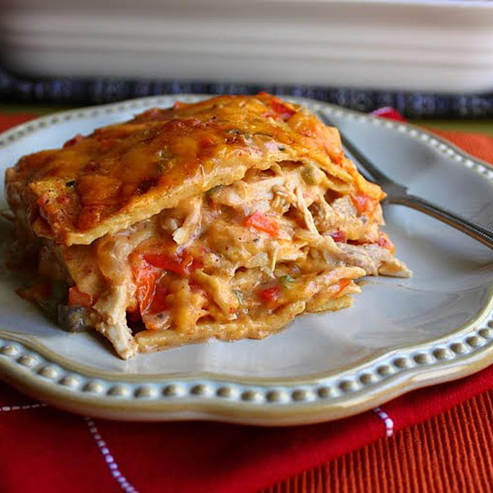

Lasagna

Klasyka kuchni inspirowanej Włochami w najlepszym wydaniu! Przygotuj lasagne z sosem pomidorowym, beszamelowym i warzywami.
PRZYGOTOWANIE
SOS BOLOŃSKI
- Na oliwie, w dużym garnku, zeszklić drobno posiekaną cebulę. dodać posiekany w drobną kosteczkę seler naciowy oraz startą marchewkę (warzywa można też rozdrobnić w malakserze).
- Obsmażyć, następnie przesunąć na bok i w wolne miejsce włożyć pokrojony w drobną kosteczkę boczek. Zrumienić i wymieszać z warzywami.
- Przesunąć wszystko na bok garnka i partiami wkładać mięso: włożyć 1/3 część mięsa i obsmażyć mieszając co chwilę, aż zmieni kolor z czerwonego na brązowy. Następnie wymieszać z warzywami i boczkiem, przesunąć na bok, powtórzyć z resztą mięsa.
- Wlać wino i gotować na średnim ogniu przez 3 minuty, dodać gorący bulion wymieszany z koncentratem pomidorowym, zagotować, dodać passatę pomidorową.
- Doprawić solą i pieprzem. Przykryć i gotować na małym ogniu 2 godziny (można dłużej). Od czasu do czasu zamieszać.
SOS BESZAMELOWY
- W średnim garnku dobrze rozgrzać masło, dodać mąkę i smażyć przez około 2 minuty ciągle mieszając. Stopniowo wlewać mleko cały czas energicznie mieszając aż sos będzie gładki.
- Gotować na wolnym ogniu przez kilka minut. Odstawić z ognia, doprawić solą i gałką muszkatołową.
PIECZENIE
- Piekarnik nagrzać do 175 stopni C (grzanie góra-dół bez termoobiegu). Przygotować żaroodporną formę o wymiarach około 19 x 27 cm. Wysmarować ją masłem, wlać i rozprowadzić ok. 100 ml sosu beszamelowego, ułożyć pierwszą warstwę płatów lasagne (mogą nieznacznie na siebie nachodzić).
- Na płatach lasagne rozprowadzić warstwę sosu bolońskiego, następnie polać sosem beszamelowym i posypać parmezanem. Powtórzyć jeszcze 4-krotnie.
- Tak złożoną lasagne włożyć do piekarnika i piec 45 minut (w połowie czasu pieczenia przykryć folią aluminiową). Po wyjęciu z piekarnika odczekać 5 minut przed porcjowaniem.